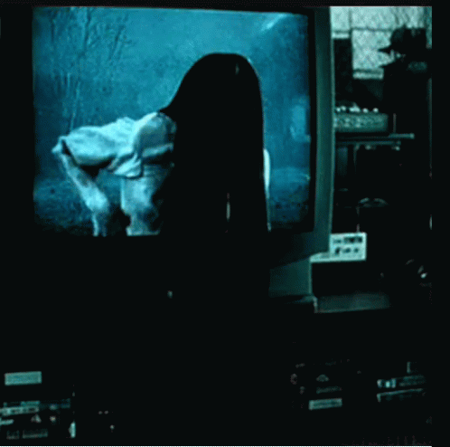

The Ring o más conocida a nivel hispanohablante como El aro, se basa en una historia de hecho real procedente de México donde el ente es una niña llamada Samara que cobra vida cuando se reproduce una cinta desconocida y esta sale de la pantalla para asesinarte.

Esta niña murió dentro de un pozo, inclúso aún existe el pozo pero está clausurado por barras de metal, esto
indica que hace tiempo esta muerte si ocurrió y aunque ea una de las leyendas más antiguas y conocidas,
sigue habiendo rumores de que se la sigue viendo cerca de descampados recitando un cántico que es imposible
detectar de que dirección proviene.
El suceso ocurre cuando de repente al colocar la cienta, la pantalla empieza a distorsionarse en blanco y negro
y muestra una secuencia de imágenes hasta llegar a un paisaje frio y oscuro donde se muestra una llanura y en su fondo
la entra de un bosque. En medio de la llanura estará un pozo donde poco a poco la pantalla hará zoom a él y en el
momento en que está lo demasiado cerca empieza a salir una niña con pelo largo y muy oscuro.
Empieza a acercar a la pantalla y sale de la misma llena de barro negro y sin poder verle la cara.